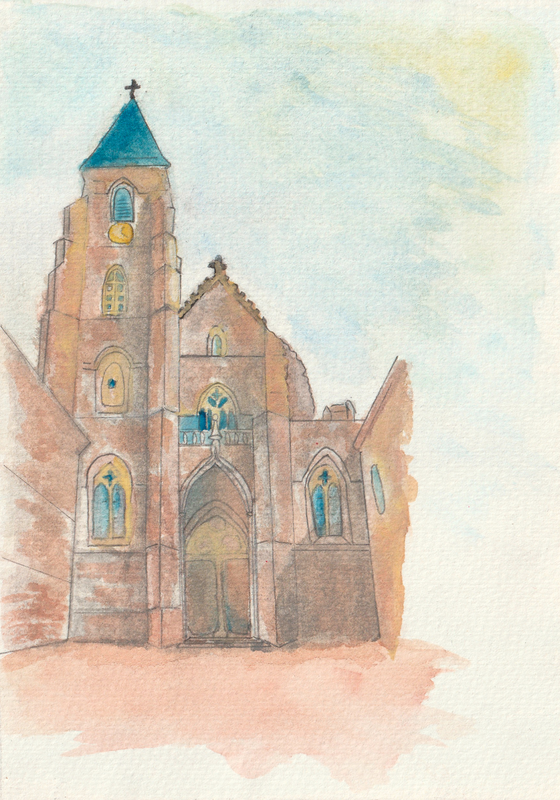
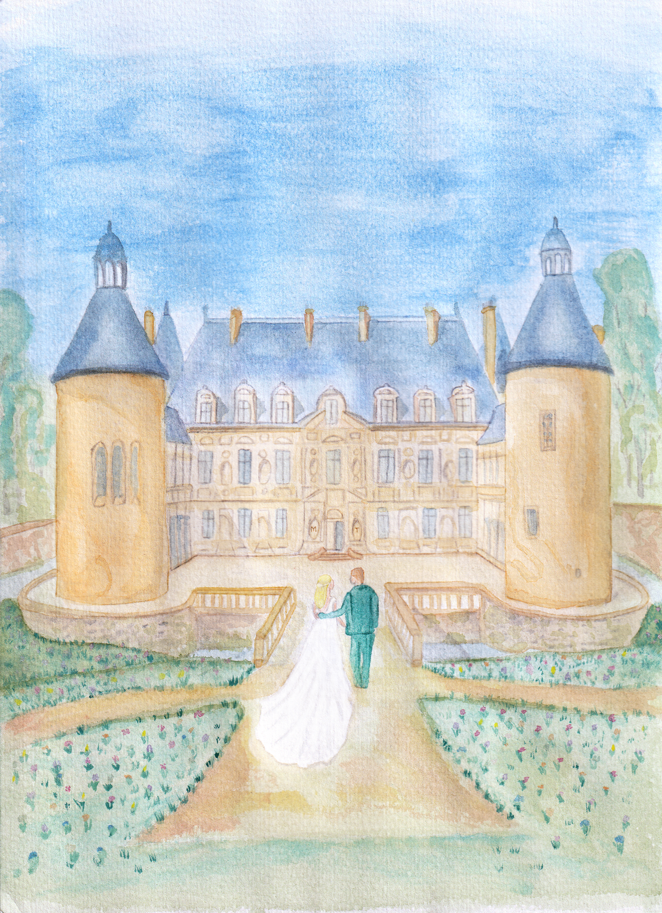
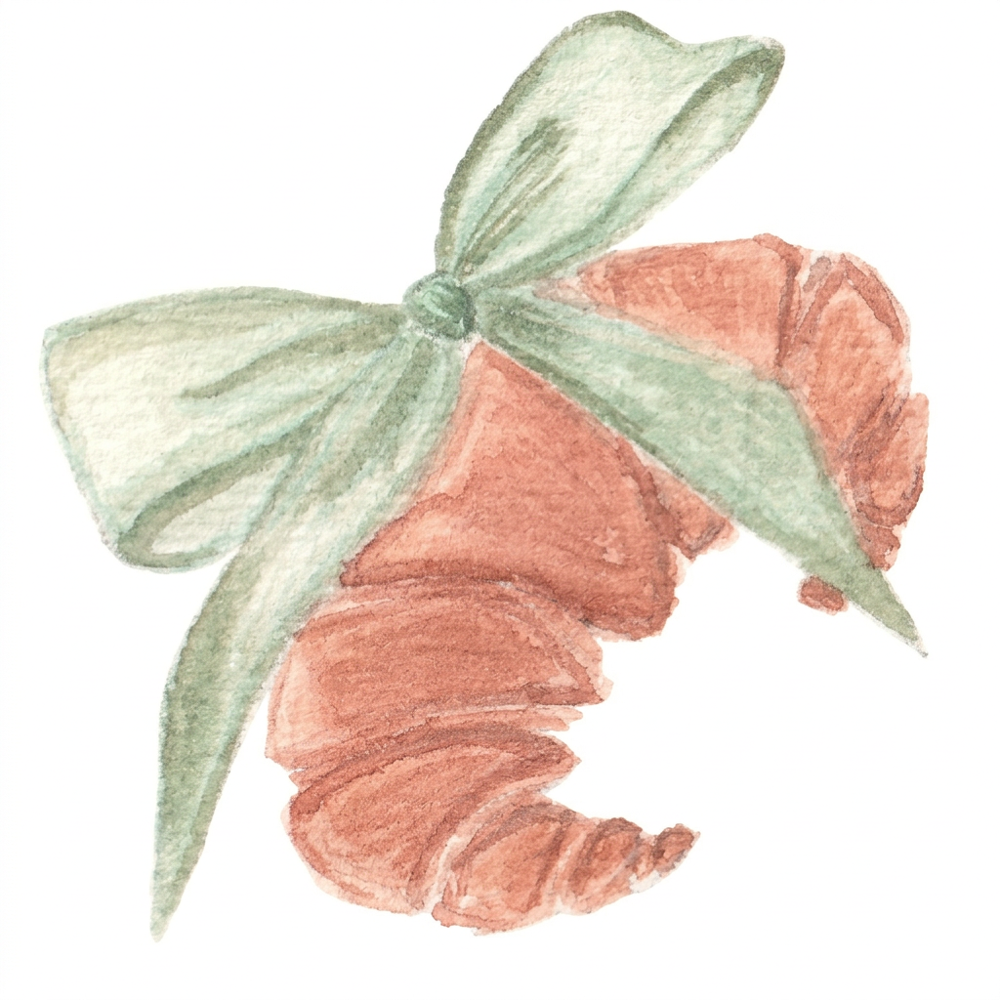
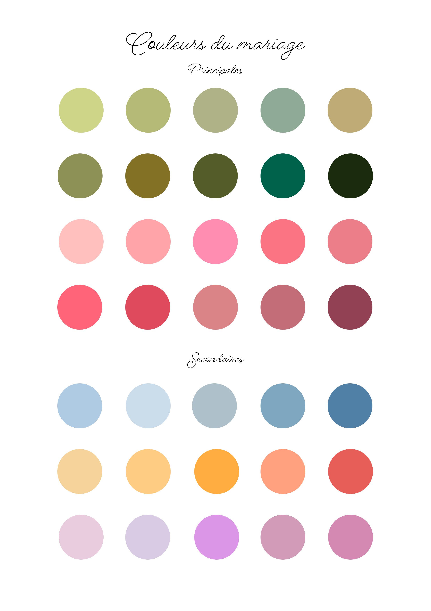

Nous nous marions
24 juillet 2027 ✦ Bourgogne
Nous serions heureux de partager cette belle journée avec vous.
Une journée à partager
Nous avons la joie de vous inviter à célébrer notre mariage le 24 juillet 2027, en Bourgogne.
Nous avons hâte de vous retrouver pour une journée pleine d’amour, de joie et de beaux souvenirs, dans un cadre qui nous ressemble.
Le 24 juillet 2027
Les horaires définitifs seront précisés à l’approche du mariage.
Eglise de Saint-Seine-l’Abbaye
Dans les jardins du Château de Bussy-Rabutin
Dans les jardins du Château
Dans les jardins du Château
Château de Bussy-Rabutin
Château de Bussy-Rabutin
Prolongeons les festivités
Nous serons heureux de prolonger ces beaux moments avec certains d’entre vous.
Pour les invités ayant reçu le carton d’invitation au brunch
Visite groupée du Château de Bussy-Rabutin, sur réservation
Notre Bourgogne



Le brunch du dimanche
32 Grande Rue, 21540 Turcey
Voir sur la carte ↗Pour célébrer ensemble
Un mariage champètre, chic et fleuri, aux couleurs de notre palette !

Nous vous invitons à choisir une couleur parmi celles de notre palette pour composer votre tenue. L’idée est de créer un joli ensemble coloré et harmonieux, dans un esprit élégant et fleuri.
Merci de ne pas porter de blanc, réservé à la mariée, et d’éviter les tenues trop décontractées.
Pour préparer votre venue
Afin de profiter pleinement de cette journée, le mariage sera réservé aux adultes. Les bébés restent bien entendu les bienvenus. En revanche, nous ne pourrons malheureusement pas accueillir les enfants de moins de 8 ans.
Aucun repas spécifique ne sera prévu pour les bébés.
Une tenue de cérémonie dans laquelle vous vous sentez bien et qui respecte le code vestimentaire. Pensez à prévoir une seconde paire de chaussure adaptée aux extérieurs et aux jardins.
Merci de nous confirmer votre présence avant le 24.04.2027, via le formulaire ci-dessous.
Certains horaires restent à confirmer. Nous mettrons cette page à jour dès que les détails seront arrétés.
Aucun hébergement n’étant prévu par nos soins, nous vous invitons à organiser votre séjour dans la région. Attention, les locations d’appartements, de maisons et de chambres sont souvent complètes très tôt, dès les mois de mars et avril. Nous vous conseillons donc de ne pas tarder à effectuer votre réservation.
Vous pouvez nous contacter directement si vous avez besoin d’une information supplémentaire pour organiser votre venue.
Une attention qui nous touche
Votre présence à nos côtés sera déjà le plus beau des cadeaux. Pour ceux qui souhaitent nous gâter davantage, nous avons préparé une liste de mariage sous forme de cagnotte pour nous accompagner dans nos futurs projets.
Découvrir notre liste de mariage ↗Nous espérons vous voir
Merci de nous indiquer si vous serez parmi nous. Cela nous aidera à préparer au mieux cette journée.
Merci de répondre avant le 24.04.2027.
Merci de nous indiquer si vous serez parmi nous le samedi. Si vous avez reçu une invitation pour le brunch du dimanche, vous pourrez également nous confirmer votre présence. Vous pourrez aussi nous indiquer si vous souhaitez participer à la visite groupée de l’intérieur du château, prévue à 16 h, sur réservation.